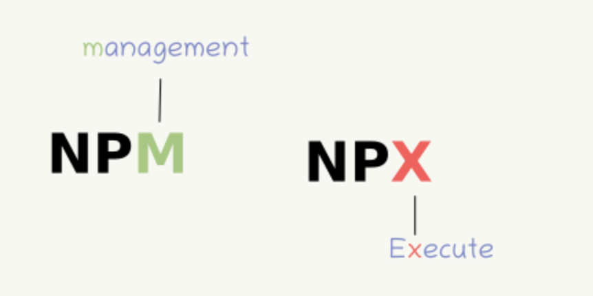
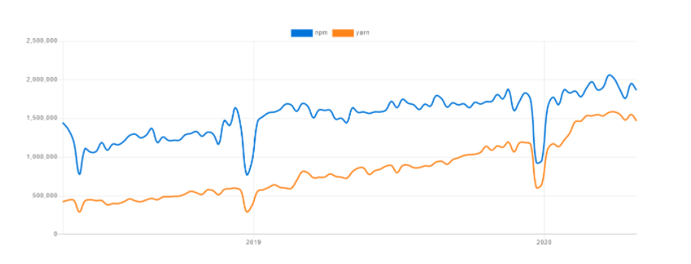
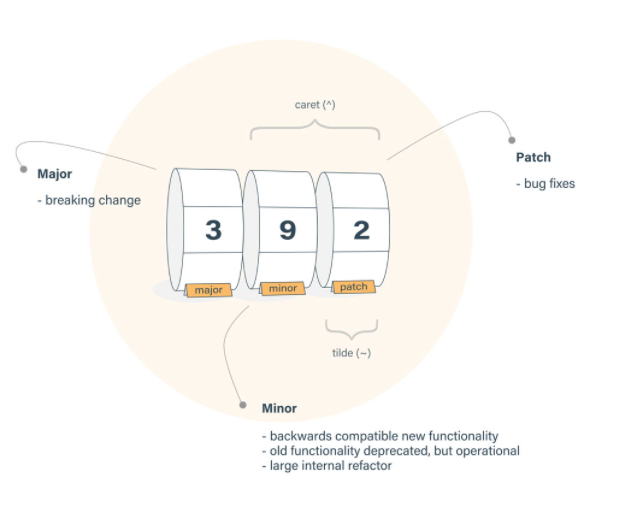

NPM
-
Overview
-
Install/remove library package
-
Package version constrains & package.lock
Overview
-
npm - Node Package Managerlà một công cụ quản lý các library, package cho NodeJs. -
npxlà một công cụ giúp bạn execute các package từ npm registry một cách đơn giản và nhanh chóng.

-
nvmlà mộtpackage toolquản lý cácversioncủa Nodejs. -
Packagelà:- a) Một thư mục chứa chương trình được mô tả bằng tệp
package.json - b) Một
tarball gzippedchứa (a) - c) Một url phân giải thành (b)
- d) Một
<name>@<version>được xuất bản trênnpm registryvới (c) - e) Một
<name>@<tag>trỏ đến (d) - f) Một
<name>giống (e), default tag làlatest - g) Một
<git remote url>phân giải thành (a)
- a) Một thư mục chứa chương trình được mô tả bằng tệp
npm components and use case
-
npmbao gồm ba thành phần riêng biệt:- npm website: dùng để discover packages, thiết lập profiles cá nhân hay tổ chức để quản lý quyền truy cập vào các public/private packages.
- npm Command Line Interface: nơi các dev tương tác với npm
- npm registry: public database cho
JavaScript softwarevàmeta-informationcủa npm.
-
Sử dụng
npmtrong các trường hợp cần:- Quản lý packages cho NodeJS app
- Tải xuống đúng cách các
standalone tools - Run packages mà không cần download bằng
npx.
npm vs yarn
-
Một vài thiếu sót của npm:
-
Queued install: npm down các dependencies từ registry của nó theo cơ chế queue (FIFO), tốn nhiều thời gian. -
Single registry: Có duy nhất 1 npm registry. -
Security: npm cho phép các packages chạy code trong quá trình download. -
Offline: Không hỗ trợ cài đặt offline -
Conflictgiữa các version của packages, dependencies. Có thể khắc phục bằngnpm shrinkwrapđể tạo lockfilenpm-shrinkwrap.json→ chỉ update version khi tồn tại lock file.
-
-
yarn- Yet Another Resource Negotiator -Node Package Manager, có thể coi là CLI client hỗ trợ việc down các dependencies:-
Cho phép download các package từ NpmJS hoặc Bower
-
Download các dependencies song song với nhau, không chờ đợi như npm.
-
Nếu đã cài 1 package trước đó,
yarnsẽ tạo một clone trong bộ nhớ cached để hỗ trợ việc cài đặt offline. -
lockchính xác duy nhất một version của packages đã cài vào fileyarn.lock→ luôn tạo và updateyarn.lock
-

-
npmvs.yarn:-
Installation procedure:
npmđược cài đặt chung vớiNodecònyarnđược cài bằngyarnpkghoặcnpmvới command: -
The lock file
-
Output log:
-
npm: Log hếtstack tracecủa các câu lệnhnpm→ Log dài, đọc mệt. -
yarn:clean, ngắn gọn và trình bày theo kiểu tree → đọc log dễ hiểu và dễ phân biệt
-
-
Installing global dependencies:
npm:yarn:
→ Cú pháp commands thay đổi khi xài
yarnso vớinpm, vẫn có vàicommands same -
The ‘why’ command:
npmchưa tích hợp tính năng "why".yarnđi kèm với một lệnh "why" cho biết lý do tại sao có một dependency trong dự án.
-
Fetching packages:
npm: fetch các dependencies từnpm registrytrong mỗi lầnnpm install.yarn: lưu trữ locally các dependenciesc và fetch từ local trong mỗi lầnyarn add.
-
Install/remove library package
-
scope: Tất cả cácpackageđều có name, ngoài ra một số có thêmscope.scopekèm trong tênpackage:
-scopelà một cách nhóm cácpackagecó liên quan lại với nhau, có thể gom lại chung 1 scope:Local install(default)): tải package vào folder./node_modulestại root. Cần dùng khi mìnhrequire()hayimport()package vô project của mình. -
Global install(with-g) : tải package vào/usr/localhoặc bất cứ nơi nào Node được cài đặt. Dùng khi mình cần run cái package bằng command line.
Install a package
npm install (with no args, in package dir)
npm install [<@scope>/]<name>
npm install [<@scope>/]<name>@<tag>
npm install [<@scope>/]<name>@<version>
npm install [<@scope>/]<name>@<version range>
npm install <alias>@npm:<name>
npm install <git-host>:<git-user>/<repo-name>
npm install <git repo url>
npm install <tarball file>
npm install <tarball url>
npm install <folder>
aliases: npm i, npm add
common options: [-P|--save-prod|-D|--save-dev|-O|--save-optional|--save-peer] [-E|--save-exact] [-B|--save-bundle] [--no-save] [--dry-run]
Lệnh này cài đặt một package và được quản lý bởi: npm-cowrap.json, package-lock.json hoặc yarn.lock.
Description
folder
npm install <folder>: Cài đặt package dựa trên thư mục chứa package đó.
tarball file
npm install <tarball file>: Cài đặt package dựa trêntarball file:.tar,.tar.gz, hoặc.tgz. Ví dụ:npm install <tarball url>: tương tự như trên nhưng là link tới url của file tarball file để down về
scope
npm install [<@scope>/]<name>: Cài package theo scope và tên package, version và tag mặc định làlatest
npm install [<@scope>/]<name>@<tag>vànpm install [<@scope>/]<name>@<version>: Tương tự trên, nhưng down chính xác tag hay version của package
alias
npm install <alias>@npm:<name>: alias là biệt danh của package, được named trong dự án từ những package củanpm registrytuân theo validate-npm-package-name. Ví dụ:
npm install my-react@npm:react
npm install jquery2@npm:jquery@2
npm install jquery3@npm:jquery@3
npm install npa@npm:npm-package-arg
npm install <git remote url>: Cài đặt package từ git bằnggit remote url, syntax củagit remote url:
<protocol>://[<user>[:<password>]@]<hostname>[:<port>][:][/]<path>[#<commit-ish> | #semver:<semver>]
Ví dụ:
npm install git+ssh://git@github.com:npm/cli.git#v1.0.27
npm install git+ssh://git@github.com:npm/cli#pull/273
npm install git+ssh://git@github.com:npm/cli#semver:^5.0
npm install git+https://isaacs@github.com/npm/cli.git
npm install git://github.com/npm/cli.git#v1.0.27
GIT_SSH_COMMAND='ssh -i ~/.ssh/custom_ident' npm install git+ssh://git@github.com:npm/cli.git
- Đơn giản hơn, có thể dùng
npm install <githubname>/<githubrepo>[#<commit-ish>]hoặcnpm install github:<githubname>/<githubrepo>[#<commit-ish>]. Ví dụ:
- Ngoài ra, ta có thể tải package với git bằng id của commit theo kiểu
npm install gist:[<githubname>/]<gistID>[#<commit-ish>|#semver:<semver>]hoặc bằng gitlabnpm install gitlab:<gitlabname>/<gitlabrepo>[#<commit-ish>], bitbucketnpm install bitbucket:<bitbucketname>/<bitbucketrepo>[#<commit-ish>]
Configuration
Xem full tại: using-npm/config, dưới đây là 3 Configuration phổ biến nhất:
save:- Default: true
- Type: boolean
Lưu các packages đã cài đặt vào package.json dưới dạng json object dependencies. Được sử dụng để lưu packages cần thiết để ứng dụng chạy.
save-dev:- Default: false
- Type: boolean
Lưu các packages đã cài đặt vào package.json dưới dạng json object devDependencies. Được sử dụng để lưu packages cho mục đích phát triển.
global- Default: false
- Type: Boolean
Cài các package ở global thay vì local
Remove a package
npm uninstall [<@scope>/]<pkg>[@<version>]... [-S|--save|--no-save]
aliases: remove, rm, r, un, unlink
-
Thao tác này sẽ gỡ cài đặt package, xóa luôn các objects:
dependencies,devDependencies,optionalDependencies, vàpeerDependenciestrongpackage.json,npm-shrinkwrap.jsonvàpackage-lock.json. -
Có thể sử dụng Configuration:
no-saveđể ngăn việc npm xóa các json object trên.
Package version constrains & package.lock
-
npmđưa ra một số ràng buộc vềPackage version, gọi là semantic versioning rules (? - V6, V7, npm V8 đọc docs ko thấy) mà bất cứ NodeJS Dev nào cũng should know. Mỗi khipackagecó các cập nhật quan trọng, thì nên xuất bản phiên bản mới củapackage,Package versionđược cập nhật trong tệppackage.json. Việc đặtPackage versiontuân theosemantic versioning rulesgiúp các ông dev khác - user của cáipackagehiểu được mức độ thay đổi trong một phiên bản nhất định củapackagevà điều chỉnh mã của riêng ổng nếu cần. -
semantic versioning rulescơ bản:First release:1.0.0Patch release:1.0.1Minor release:1.1.0Major release:2.0.0

version specificity:
| Value | Description |
|---|---|
~version |
Approximately equivalent to version, cách tính: npm semver - Tilde Ranges |
^version |
Compatible with version, cách tính: npm semver - Caret Ranges |
version |
version cụ thể |
>version hoặc >=version |
version thấp nhất |
<version hoặc <=version |
version cao nhất |
1.2.x |
version từ 1.2.0 tới 1.2.9 |
* |
version nào cũng hảo |
latest |
latest release |
-
package-lock.jsonđược tạo tự động từ npm ^5.x.x với mục đích theo dõi chính xácPackage versioncủa mọi package được cài đặt để nodejs app có thể tái tạo lại chính xác 100%node_modules. -
package-lock.jsongiải quyết một vấn đề rất cụ thể màpackage.jsonchưa được giải quyết được: Trongpackage.json, ta có thể đặtPackage versionsử dụngsemantic versioning rules, từ đó dẫn tới trường hợp Cài đặt các dependencies từ cùng một file package.json nhưng lại dẫn đến 2 phiên bản cài đặt khác nhau.
"express": {
"version": "4.15.4",
"resolved": "https://registry.npmjs.org/express/-/express-4.15.4.tgz",
"integrity": "sha1-Ay4iU0ic+PzgJma+yj0R7XotrtE=",
"requires": {
"accepts": "1.3.3",
"array-flatten": "1.1.1",
"content-disposition": "0.5.2",
"content-type": "1.0.2",
"cookie": "0.3.1",
"cookie-signature": "1.0.6",
"debug": "2.6.8",
"depd": "1.1.1",
"encodeurl": "1.0.1",
"escape-html": "1.0.3",
"etag": "1.8.0",
"finalhandler": "1.0.4",
"fresh": "0.5.0",
"merge-descriptors": "1.0.1",
"methods": "1.1.2",
"on-finished": "2.3.0",
"parseurl": "1.3.1",
"path-to-regexp": "0.1.7",
"proxy-addr": "1.1.5",
"qs": "6.5.0",
"range-parser": "1.2.0",
"send": "0.15.4",
"serve-static": "1.12.4",
"setprototypeof": "1.0.3",
"statuses": "1.3.1",
"type-is": "1.6.15",
"utils-merge": "1.0.0",
"vary": "1.1.1"
}
},
→ package-lock.json chỉ định rõ version, location, mã băm integrity cho mỗi module và từng dependencies của nó, từ đó giúp cho việc clone của node_modules được tạo ra sẽ luôn giống nhau cho dù ta cài đặt nodejs app vào bất cứ lúc nào.